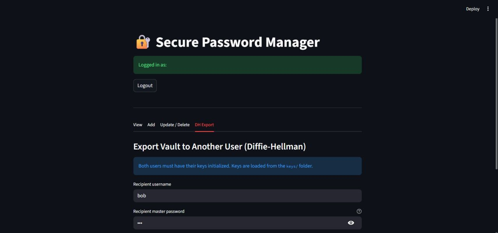

Python · Streamlit · Applied cryptography
Secure Password Manager
An encrypted vault with a command-line interface, a Streamlit UI, and support for transferring the vault between devices.


Vault and transfer
The vault uses AES-256-GCM. I implemented ElGamal signatures for tamper detection and used ephemeral Diffie-Hellman keys for device-to-device transfers.
Session key ready Device2: transfer verified Device2: import done